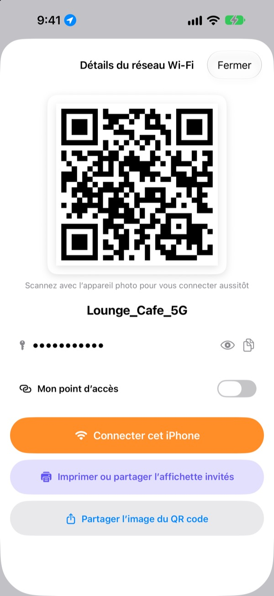
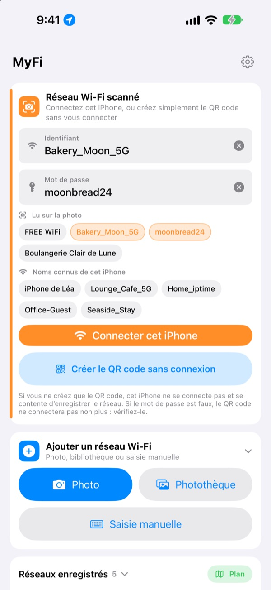
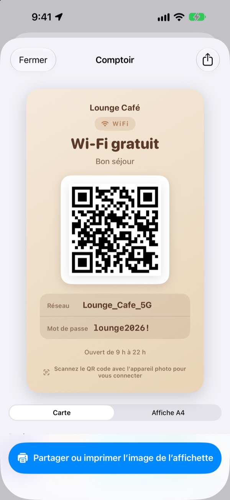
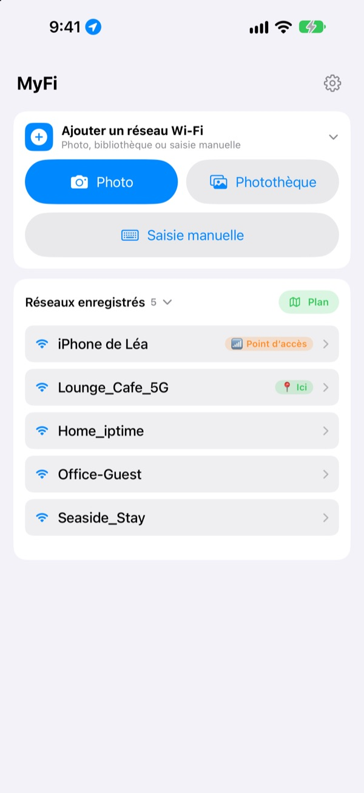

Ne dictez plus le mot de passe.
Montrez un QR code.
Vos amis visent le code avec l’appareil photo et ils sont connectés. L’affichette au mur du café ? Une photo, et cet iPhone se connecte. Fini les fautes de frappe en recopiant.
Toutes les fonctions sont gratuites. iPhone sous iOS 17 ou ultérieur.

Créez le QR code de votre Wi-Fi
Changez le nom ou le mot de passe, l’affichette se met à jour aussitôt. Visez-la avec l’appareil photo d’un téléphone : la proposition de connexion s’affiche pour de vrai.
« C’est quoi le mot de passe du Wi-Fi ? » Combien de fois aujourd’hui ?
Vous le dictez et vous vous trompez de majuscules. Vous recopiez l’affichette au mur et confondez 0 et O. Puis vous réexpliquez tout. MyFi remplace tout ça par une photo et un QR code.
Une photo, et c’est connecté
Photographiez l’affichette Wi-Fi ou le ticket de caisse, ou choisissez une image dans la photothèque. MyFi lit le nom du réseau et le mot de passe et connecte cet iPhone. Si l’affichette porte aussi un QR code, il le lit en premier pour des informations exactes.
Si le texte est flou, faites glisser un morceau tiré de la photo dans le champ du nom ou du mot de passe.

Créez et imprimez l’affichette invités
Choisissez l’un des 7 thèmes et ajoutez le nom, le logo et des lignes comme les horaires d’ouverture. Optez pour une carte ou une affiche A4 portrait, enregistrez-la en image ou imprimez-la directement avec AirPrint.
Gardez plusieurs affichettes, une par établissement ou par table, et modifiez-les quand vous voulez.

Les lieux où vous revenez passent en tête
Les réseaux auxquels vous vous connectez ou que vous partagez sont enregistrés avec le lieu. Revenez-y et ce réseau apparaît en haut de la liste ; tous les lieux enregistrés sont aussi sur un plan.
Placez le QR code de votre Wi-Fi le plus partagé en widget sur l’écran d’accueil ou l’écran verrouillé. Quand un invité demande, montrez simplement l’écran.

Trois étapes pour commencer
- 1
Ouvrez l’app
Elle demande une fois l’accès à la position, car iOS ne donne le nom du Wi-Fi actuel qu’aux apps qui l’ont.
- 2
Photographiez ou saisissez
Prenez l’affichette en photo, ou saisissez une seule fois le mot de passe de votre Wi-Fi.
- 3
Connectez ou montrez
Connectez cet iPhone, ou affichez le QR code devant l’appareil photo de l’autre personne.
Où trouver quoi
- Se connecter avec la photo d’une affichette
Ajouter un réseau Wi-Fi, puisPhotoouPhotothèque, puisConnecter cet iPhone- Saisir les informations
Ajouter un réseau Wi-Fi, puisSaisie manuelle- Créer seulement un QR code
Créer le QR code sans connexion- Envoyer le QR code par message
- Touchez un réseau enregistré, puis
Partager l’image du QR code - Affichette invités
- Touchez un réseau enregistré, puis
Imprimer ou partager l’affichette invités - Partager son partage de connexion en QR code
- Touchez un réseau enregistré et activez
Mon point d’accès - Se connecter ou partager d’un geste
- Dans la liste, balayez vers la droite pour vous connecter, vers la gauche pour partager
- Voir les lieux enregistrés
Plan, à côté deRéseaux enregistrés- QR code sur l’écran d’accueil
- Maintenez le doigt sur l’écran d’accueil et ajoutez le widget
QR Wi-Fide MyFi
Vous pouvez aussi ouvrir le QR code directement avec Siri ou l’app Raccourcis.
Toutes les fonctions sont gratuites
Gratuit
- Connexion au Wi-Fi à partir d’une photo
- Création de QR codes et partage en image
- Affichettes invités en 7 thèmes, carte ou affiche A4, impression AirPrint
- Widgets pour l’écran d’accueil et l’écran verrouillé
- Plan de vos Wi-Fi enregistrés
- Sans publicité, sans inscription
Pourboire (facultatif)
- Si l’app vous plaît, vous pouvez soutenir son développement avec un pourboire
- Le pourboire ne débloque rien. Sans lui, vous avez toutes les fonctions
Un pourboire est un petit paiement unique.
Pas d’abonnement, aucune fonction payante.
Questions fréquentes
Pourquoi dois-je saisir mon mot de passe ?
iOS ne laisse aucune app lire les mots de passe Wi-Fi enregistrés sur l’appareil. MyFi détecte donc le nom du réseau et vous saisissez le mot de passe une seule fois. Ensuite, l’app utilise celui qui est enregistré.
Le nom du Wi-Fi actuel ne s’affiche pas.
iOS ne donne le nom du Wi-Fi qu’aux apps ayant accès à la position. Autorisez MyFi dans Réglages › Confidentialité et sécurité › Service de localisation. La position sert uniquement à lire le nom du réseau et à reconnaître les lieux où vous revenez.
Le nom ou le mot de passe a été mal lu.
Rapprochez-vous et prenez la photo bien droite. Si ce n’est toujours pas bon, faites glisser le bon morceau de la photo dans le champ ou corrigez-le à la main. Si l’affichette porte un QR code Wi-Fi, MyFi le lit et remplit les informations exactes.
Quelles affichettes sait-il lire ?
Il lit le mieux les affichettes rédigées en anglais ou en coréen, avec des libellés comme ID, PW, SSID, Network ou Password. Même sans libellé, il repère la ligne qui ressemble à un mot de passe. Un QR code Wi-Fi sur l’affichette est lu exactement, quelle que soit la langue.
Comment quelqu’un se connecte-t-il avec mon QR code ?
Sur iPhone comme sur Android, il suffit de viser le code avec l’appareil photo intégré et de toucher la proposition de connexion. Aucune app n’est nécessaire.
Les autres peuvent-ils voir mon mot de passe ?
Le QR code contient les informations de connexion Wi-Fi standard. C’est toujours vous qui décidez de partager, et vous pouvez masquer le mot de passe sur l’affichette invités.
Pourquoi ne puis-je pas me connecter à mon propre partage de connexion ?
Le partage de connexion de votre iPhone, c’est ce téléphone lui-même : il ne peut pas se connecter à lui-même. Activez Mon point d’accès et MyFi le traite comme un QR code à donner aux autres.
Où vont mes informations Wi-Fi ?
MyFi n’a pas de serveur. Noms de réseau, mots de passe, résultats de lecture des photos et positions sont traités et stockés uniquement sur votre appareil. Ni publicité ni pistage. L’app envoie seulement des statistiques d’utilisation anonymes et des rapports d’erreur à Apple iCloud pour être corrigée.
Sur quels appareils fonctionne-t-il ?
Sur iPhone sous iOS 17 ou ultérieur. L’app existe en 24 langues.
Une question, une remarque ? Écrivez à leeo@kakao.com. Je réponds en général sous 2 à 3 jours.